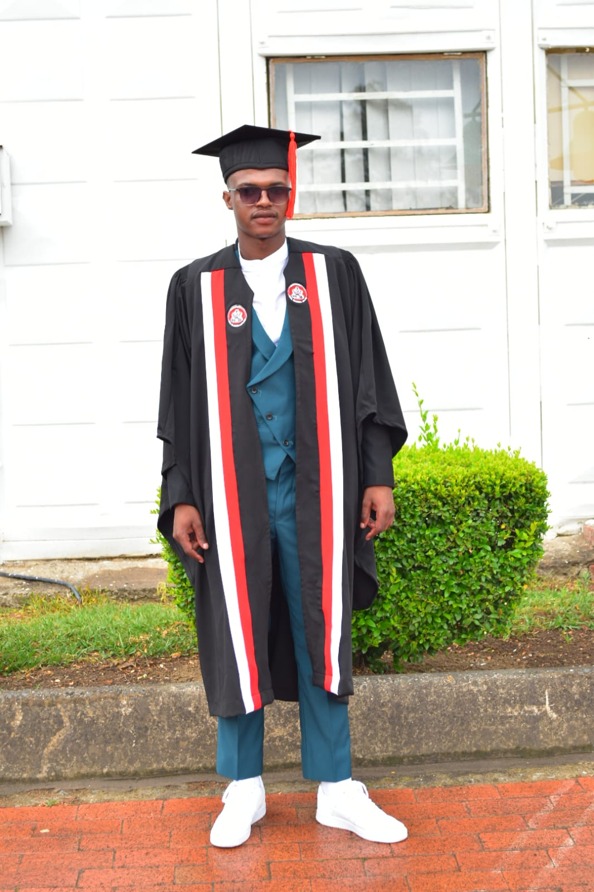

I'm Hlomohang Sethunts'a, a dedicated and results-driven professional with a Diploma in Computer Systems Engineering from Lerotholi Polytechnic.
My passion for technology led me to further specialize in cutting-edge fields, earning certifications in Coding & Programming with Python and Artificial Intelligence from the Samsung Innovation Campus. I was honored to be recognized as a Top Achiever in AI, demonstrating my commitment to mastering complex concepts.
Beyond my technical skills, I've honed my leadership abilities as a class representative for both my AI course and Computer Systems Engineering program. Professionally, I bring hands-on experience in both IT Support and Software Development. I gained valuable insights as an IT Technician at Global IT Systems and currently contribute as an IT Support & Systems Engineer at OnePower Lesotho .
I believe in showcasing the practical application of my skills. Below, you'll find a collection of photos and videos that highlight my projects, experiences, and the journey that has shaped my career in technology.